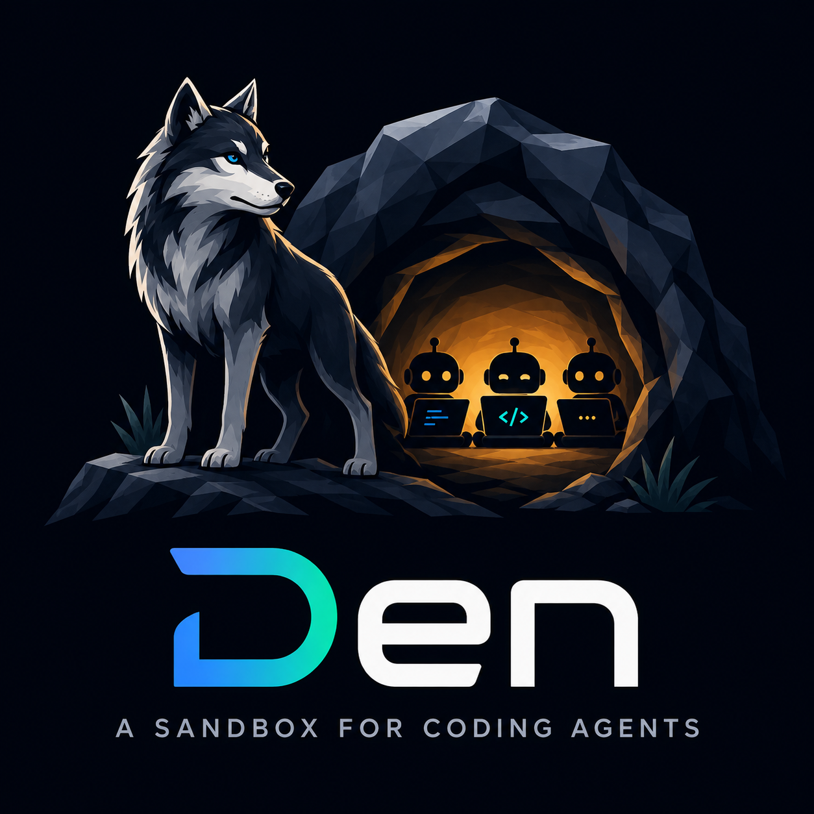

Inputs
Config directory, RepoWolf endpoint, optional sockets and ports.
Implementation plan · 21 Aug 2026

A resource-free, four-platform MVP that runs Claude Code inside Fence, routes GitHub through RepoWolf, and exposes only explicit host capabilities.
01 · Runtime shape
The launcher validates every host-facing input before Fence starts. Claude receives no direct GitHub route. On Darwin, Bash tool calls cross the mandatory Fence hook again.
Config directory, RepoWolf endpoint, optional sockets and ports.
Canonical paths, ownership, permissions, args, environment.
Strict reads, explicit writes, network allowlist, private TMPDIR.
Patched only to preserve Den’s validated scratch path.
Transparent terminal, signals, arguments, and exit status.
Mandatory PreToolUse reroute for Bash commands.
GitHub API, Git HTTPS, and Git SSH through one endpoint.
02 · Dependency order
Tasks are intentionally linear. Filter by phase, then open any task to inspect its exact implementation steps.
03 · Security model
Strict denial is the baseline. Reads, writes, sockets, ports, and routes enter only after canonical validation and explicit policy generation.
den executable.04 · Stop points
Pinned behavior contradicted two design assumptions. The plan fails closed: record an approved design erratum first, or stop.
Fence 0.1.58 overwrites child TMPDIR with shared /tmp/fence. Apply one reviewed local patch to the locked source so outer Fence and nested fence -c preserve Den’s validated scratch path.
Claude 2.1.158 --bare and inherited CLAUDE_CODE_SIMPLE skip hooks. Darwin must reject the flag and scrub the variable before the mandatory security hook can be trusted.
05 · Evidence path
Pure checks test deterministic wiring. Native jobs prove the operating-system sandbox on every supported architecture.
Constructor API, modules, startup modes, closure contents, fake Git routing, argument preservation, cleanup, and resource-free package shape.
Real Fence isolation, Linux network namespace preflight, Darwin hooks, read/write denial, CA exposure, sockets, ports, RepoWolf routing, and nested TMPDIR behavior.
A loopback Anthropic Messages fixture emits a real Bash tool request. Both the Den hook and an unrelated user hook must run before the tool.
All 12 design criteria map to tasks. Final CI evaluates every package and check, then runs native enforcement separately with host sandbox facilities available.